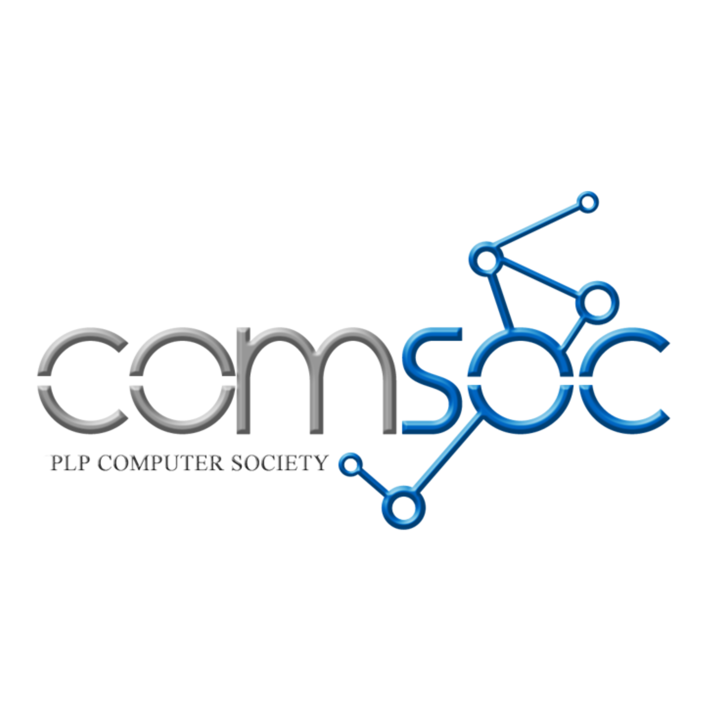

Margaret Fundano
Graphic Designer & UIUX Designer
Creating user-friendly designs and engaging visuals for web and mobile, blending creativity with functionality, with 3+ years of experience.
About Me
Creative and detail-oriented Computer Science undergraduate with a strong focus on UI/UX and graphic design, combining technical knowledge with visual problem-solving. Experienced in designing user-centered interfaces, developing digital and print assets, and supporting web-based platforms for both corporate and small business environments.
Proficient in translating concepts into functional and visually cohesive designs while collaborating effectively with cross-functional teams. A consistent Dean's Lister with a passion for building intuitive, engaging, and well-structured digital experiences.
Education
Pasig City Science High School
Secondary Education
Pasig City, Philippines
2016 - 2022
Pamantasan Ng Lungsod Ng Pasig
Bachelor of Science in Computer Science
Pasig City, Philippines
2022 - 2026
Organizations
Creative Committee
September 2020 - July 2021
Served as Creative Committee of PCSHS Coalition at Pasig City Science High School.
Creative Head Committee
August 2021 - June 2022
Served as Creative Head Committee of PCSHS at Pasig City Science High School.

Graphic Designer
August 2023 - June 2024
Served as Graphic Designer of PLP Computer Society Inc. at Pamantasan ng Lungsod ng Pasig.
Public Relations Officer
August 2024 - April 2025
Served as Public Relations Officer of PLP Computer Society Inc. at Pamantasan ng Lungsod ng Pasig.